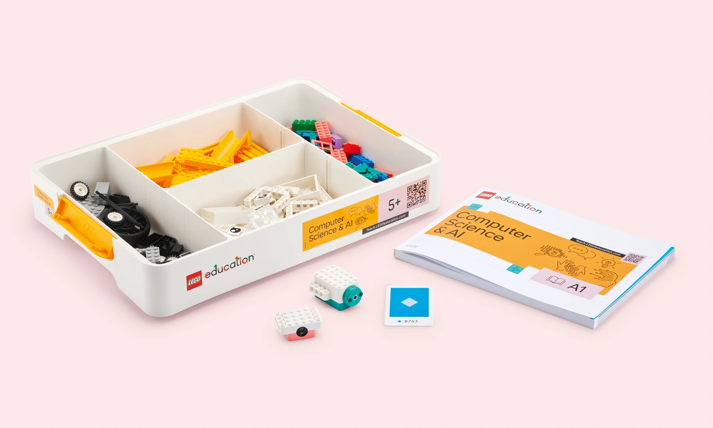
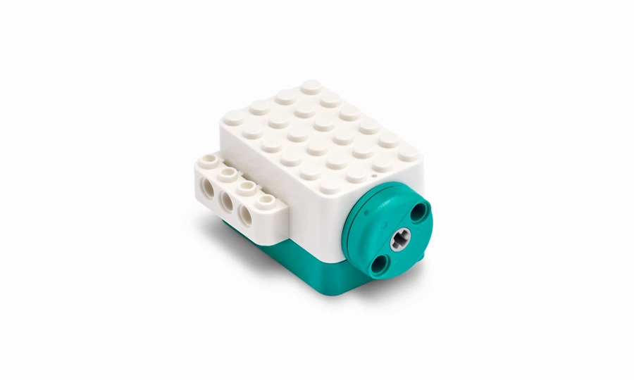
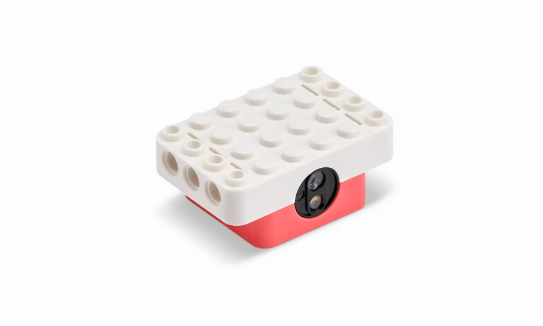
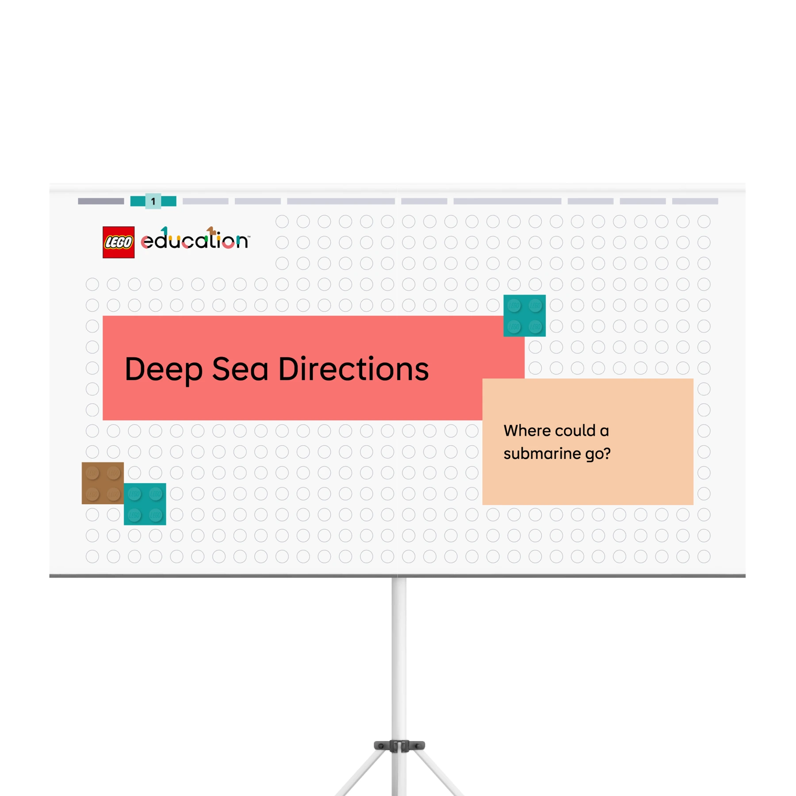
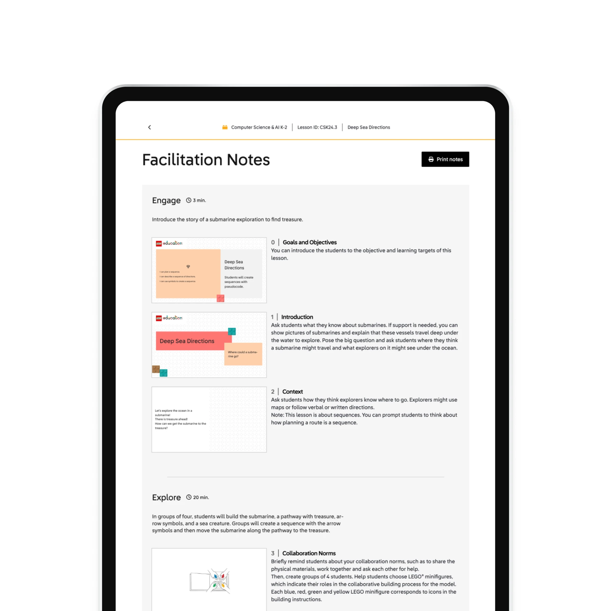
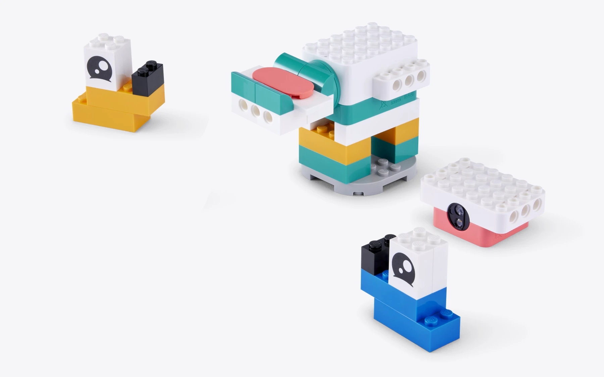
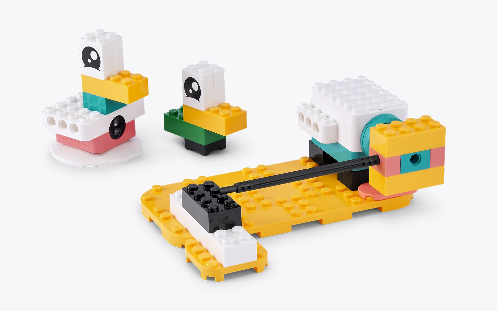
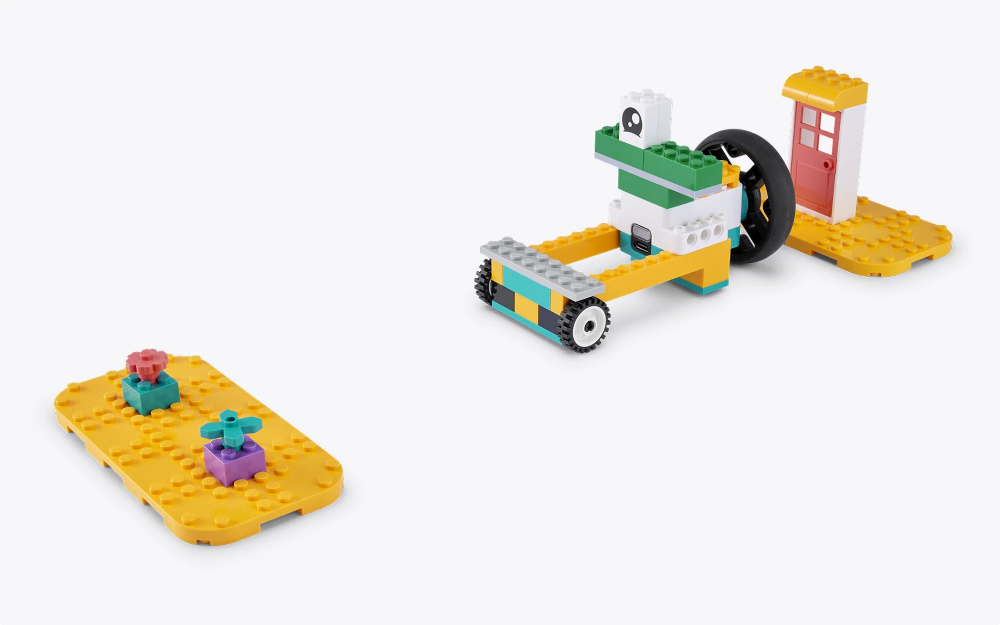
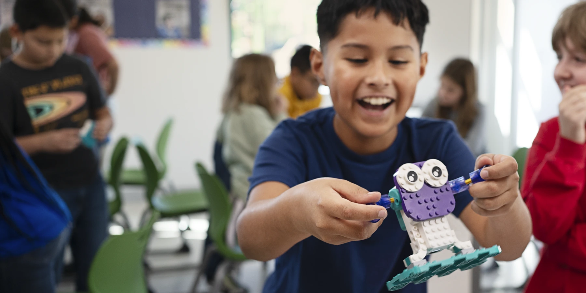
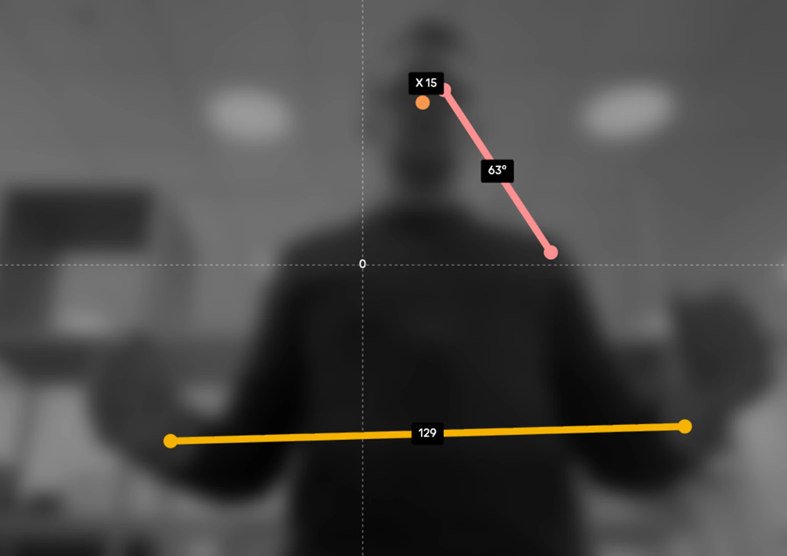

구매 판단 스냅샷
DECISION FIRST

기초부터 AI·데이터까지 단계적 진행
입력과 출력의 원리를 물리적으로 확인
아이콘 코딩으로 읽기 부담을 낮춤
가격·기기·부모 시간을 확인한 뒤 구매
제품번호 45520. 레고 조립과 아이콘 코딩을 연결해 시퀀스·이벤트·루프·AI 분류까지 배우는 초등 1–2학년용 교육 키트입니다.

기초부터 AI·데이터까지 단계적 진행
입력과 출력의 원리를 물리적으로 확인
아이콘 코딩으로 읽기 부담을 낮춤
가격·기기·부모 시간을 확인한 뒤 구매
추상적인 순서·반복·조건을 움직임과 센서 반응으로 확인합니다.
부모의 질문과 디버깅 대화가 없으면 비싼 조립 세트로 끝날 수 있습니다.
코딩 캔버스 실행, 한국어 교사 포털, 공식 리셀러 가격·A/S입니다.
아이가 코드를 외우는 대신 문제를 나누고, 순서를 만들고, 실제 모델을 움직여 보고, 예상과 다르면 다시 고치는 흐름을 반복합니다. 다만 가정에서는 부모가 교사의 역할을 일부 맡아야 합니다.
코딩 관심이 분명하고 부모가 주 1회 함께할 수 있다면 구매 추천입니다. 반대로 아이가 조립 지시를 싫어하거나 부모가 진행할 시간이 거의 없다면, 먼저 ScratchJr·명령 카드 놀이로 4주간 흥미를 확인하는 편이 안전합니다.
기초, 하드웨어, 이벤트, 시퀀스, 루프, AI 및 데이터의 6개 단원으로 구성되고, 각 단원은 수업 4회와 설계 과제 1건으로 이어집니다.[1]
Coding Canvas는 아이콘 코딩을 제공하고 학생 로그인 없이 PIN으로 수업에 접근합니다. 프로젝트는 기기 로컬에 저장됩니다.[1]
공식 수업은 4인 그룹 역할과 진행 시간을 포함합니다. 한 아이가 집에서 쓸 때는 부모가 질문·테스트·기록 역할을 순환해야 협업형 설계의 빈틈을 줄일 수 있습니다.[1]
“어떻게 움직여?”를 자주 묻고 실패 후 다시 시도하는 아이.
정답을 알려주기보다 질문하고 기다릴 40분을 확보할 수 있음.
한국 공식 가격이 보이지 않으므로 리셀러의 실판매 조건을 확인.
자동 튜토리얼형 소비자 완구가 아니므로 활용률이 낮아질 가능성.
키트는 싱글 모터 1개, 컬러 센서 1개, 연결 카드 1개와 USB 케이블을 포함합니다. 복잡한 로봇보다 입력과 출력의 기본 구조를 확실히 경험하도록 단순화된 구성입니다.[1]
브릭과 설명서, 전자 부품, 연결 카드를 함께 사용합니다. 교사 포털의 수업을 고르고 Coding Canvas로 코딩한 뒤, 모터의 움직임과 센서 입력으로 결과를 확인하는 구조입니다.

코드의 결과를 회전·이동으로 보여줍니다. 아이는 “명령을 바꾸면 움직임이 어떻게 달라지는지” 직접 비교합니다.

색이나 환경의 변화를 입력으로 받아 동작을 시작하거나 바꾸는 원리를 경험합니다.
모터와 센서가 각각 1개이므로 다축 로봇·정교한 자율주행보다 기초 알고리즘과 원인–결과 학습에 더 적합합니다.

학생용 프레젠테이션, 교사용 진행자 노트, 예상 시간, 4인 역할, 형성 평가표가 포함됩니다. 부모는 이 자료를 ‘가정 수업 대본’으로 활용할 수 있습니다.[1]

각 단원은 4개 수업과 1개 설계 과제로 구성됩니다. 처음에는 일상 과정을 나누고, 이후 하드웨어와 알고리즘을 거쳐 마지막에 AI가 데이터를 분류하는 원리까지 올라갑니다.[1]
함께 조립하는 규칙을 익히고, 양치·등교 준비 같은 일상 과정을 작은 단계로 나눕니다.
센서는 입력을 받고 모터는 출력을 만든다는 관계를 탐구합니다. 컴퓨터 시스템을 부품이 협력하는 구조로 이해합니다.

버튼·색·동작 같은 사건이 프로그램을 시작하거나 반응을 바꾸는 개념을 익힙니다.

둥지 퀘스트의 디버깅, 오리 코드, 심해 길찾기의 슈도 코드, 이야기 순서 설계로 알고리즘을 연습합니다.

같은 코드 블록을 여러 번 나열하는 대신 반복 규칙으로 압축합니다. 패턴을 찾고 더 효율적인 표현을 배웁니다.
AI 분류를 통해 데이터가 달라지면 예측이 달라질 수 있음을 경험합니다. 정답 기계가 아니라 학습 데이터에 영향을 받는 시스템으로 소개합니다.
각 단원을 따로 끝내는 것이 아니라, 앞에서 익힌 생각을 다음 문제에 다시 사용하게 하는 것이 핵심입니다.
7세의 성과는 어려운 문법을 쓰는지가 아니라, 문제를 설명하고 예상하며 오류를 찾고 다른 방법을 제안하는지로 보는 편이 적절합니다. 이는 초기 학년에서 일상 알고리즘, 블록·유형 코딩, 단계 설명, 간단한 프로그램의 오류 찾기와 수정을 강조하는 2026 CSTA 기준과 방향이 같습니다.[11]
“먼저 바퀴를 달고, 다음에 센서를 붙이고…”처럼 작업을 작은 단계로 말합니다.
관찰 신호 · 막혔을 때 전체를 포기하지 않고 한 단계만 다시 봅니다.실행 전에 순서를 그림이나 말로 계획하고, 필요한 명령을 골라 배열합니다.
관찰 신호 · “이 블록은 먼저 와야 해”라고 이유를 설명합니다.실패를 정답·오답으로 끝내지 않고 예상과 실제가 달라진 지점을 찾습니다.
관찰 신호 · 블록 하나 또는 값 하나만 바꾸어 다시 시험합니다.반복되는 동작을 발견하고 긴 명령을 루프나 간단한 규칙으로 줄입니다.
관찰 신호 · 다른 모델에도 같은 규칙을 적용하려 합니다.AI가 틀렸을 때 “기계가 나빠서”가 아니라 학습 예시와 기준을 다시 봅니다.
관찰 신호 · 더 다양한 예시를 넣으면 결과가 달라질지 예상합니다.공식 수업은 한 교시 분량이며 프레젠테이션, 진행자 노트, 4인 역할과 평가 단계를 제공합니다. 아래 가정용 흐름은 공식 단원 순서를 바탕으로 본 보고서가 재구성한 활용안입니다.[1]
목표·어휘·질문·타이밍·평가표를 확인합니다.
조립, 코딩, 테스트, 설명을 번갈아 담당합니다.
화면은 도구이며, 핵심은 물리 모델과 토론입니다.
학생이 무엇을 이해했는지 설명하고 다음 시도를 정합니다.
미션을 이야기로 제시하고 아이가 결과를 예측하게 합니다.
부모는 부품을 찾아 주되 조립 순서를 대신 결정하지 않습니다.
아이콘 블록으로 가장 작은 성공 프로그램부터 만듭니다.
한 번에 하나의 블록이나 값만 바꾸고 결과를 비교합니다.
아이에게 “무엇을 바꿨고 왜 나아졌는지” 부모를 가르치게 합니다.
영상에서 아이가 화면만 보는지, 모델을 만지고 팀원과 설명하는 시간이 충분한지를 관찰하세요. 이 제품은 화면 중심 코딩 앱이 아니라 체험식 수업과 디지털 도구의 결합을 목표로 합니다.
제품의 물리 모델, Coding Canvas, 협업형 수업이 어떻게 연결되는지 확인할 수 있습니다.
YouTube에서 열기
① 아이가 직접 설명하는가 ② 코드 실행 후 모델을 수정하는가 ③ 화면 밖에서 팀 대화가 이어지는가. 이 세 요소가 보이지 않으면 단순 조립 놀이로 끝날 가능성이 큽니다.
제품은 컴퓨터 비전과 AI 분류를 연령에 맞게 다루되, 챗봇 기능을 제공하지 않습니다. AI가 왜 틀릴 수 있는지와 데이터의 역할을 관찰하는 입문 과정입니다.[2]

PIN으로 수업에 접근하며 개인 계정을 만들지 않습니다.
AI 기능이 학생 기기에서 로컬로 실행되고 데이터가 LEGO나 제3자에게 전송되지 않는다고 공식 설명합니다.
카메라는 실시간 좌표 센서로 쓰이며 이미지나 영상이 기록·전송되지 않습니다.
할루시네이션·부적절한 언어·감정적 의존과 관련된 챗봇 위험을 피하도록 설계됐습니다.
이미지를 수업 중 센서처럼 사용
원시 카메라 데이터 제거
예시 데이터와 기준으로 판단
틀린 이유와 데이터 품질 토론
LEGO Education이 의뢰한 글로벌 교육자 조사에서는 화면과 체험을 섞는 접근에 대한 요구가 확인됩니다. 다만 이는 교사의 인식 조사이며, 이 제품을 구매하면 특정 점수만큼 능력이 오른다는 독립 실험은 아닙니다. 제품의 구조가 표준과 연구 방향에 부합하는지와 제품 자체의 효과가 입증됐는지는 구분해야 합니다.
응답 교육자들이 기존 CS 자료의 손으로 하는 활동과 협업이 부족하다고 답한 비율.
화면 활동과 체험식 활동을 섞는 방식이 가장 좋다고 본 응답 비율.
응답자들이 일부 학습 결과에서 순수 화면 방식보다 혼합 방식을 더 효과적이라고 평가한 정도.
2026 CSTA 기준은 초기 학년에서 일상 알고리즘을 만들고 수행하기, 블록·유형 코딩으로 간단한 프로그램 만들기, 코드 단계를 설명하기, 오류를 찾아 수정하기, 사람과 기계가 사용하는 패턴을 알아보기를 강조합니다. CS & AI K–2의 여섯 단원은 이 범주와 상당 부분 정렬됩니다. 다만 ‘정렬’은 학습 효과의 크기를 증명하는 말이 아닙니다.[11]
Su와 Yang의 동료심사 체계적 문헌고찰은 2010–2022년 유아 컴퓨팅 사고 교육 연구 26편을 분석했습니다. 연령에 맞는 설계는 초기 컴퓨팅 사고와 의사소통·협업·문제 해결을 지원할 수 있었지만, 깊이 있는 학습, 타당한 평가, 적절한 도구와 활동 선택은 계속되는 과제로 남았습니다. 본 보고서가 부모 동행과 관찰 기록을 구매 조건으로 둔 이유입니다.[12]
| 선택지 | 코딩 사고력 | 물리 피드백 | 부모 개입 | 비용·위험 | 추천 상황 |
|---|---|---|---|---|---|
| CS & AI K–2 추천 후보 | 시퀀스·이벤트·루프·AI까지 체계적 | 모터·컬러 센서로 즉시 확인 | 중간~높음 | 국내 가격 미정 · 출시 초기 | 아이 관심이 분명하고 부모가 함께할 수 있음 |
| ScratchJr | 시퀀스·이벤트·반복 입문에 강함 | 화면 속 캐릭터 | 낮음~중간 | 무료 또는 낮음 | 구매 전 4주 흥미 검증 |
| 일반 LEGO + 명령 카드 | 언플러그드 분해·순서에 유용 | 조립 피드백만 있음 | 높음 | 기존 브릭 활용 가능 | 화면 없이 시작하거나 예산을 아끼고 싶음 |
| SPIKE Essential 보유분 | 블록 코딩과 센서 학습 가능 | 풍부함 | 중간 | 2026년 단종 · 앱 지원 2031까지 | 이미 보유했거나 상태 좋은 저가 재고 |
아래는 공식 단원 순서와 공개된 수업 예시를 바탕으로 본 보고서가 만든 가정용 변형안입니다. 공식 수업안을 그대로 재현하는 것이 아니며, 아이의 속도에 따라 1주를 2주로 늘려도 됩니다.
| 주차 | 사고 목표 | 추천 활동 | 부모 질문 | 완료 기준 |
|---|---|---|---|---|
| 1주 | 협업 규칙 | 부품 찾기·조립·정리 역할을 정하고 3분마다 역할 바꾸기 | “도와달라고 말할 때 어떤 정보를 줘야 할까?” | 아이 스스로 역할을 설명 |
| 2주 | 문제 분해 | 등교 준비나 샌드위치 만들기를 5개 그림 단계로 표현 | “더 작은 단계로 나눌 수 있어?” | 순서를 빠뜨리지 않고 말함 |
| 3주 | 입력·출력 | 센서와 모터를 각각 ‘귀’와 ‘손’으로 이름 붙여 모델 설명 | “무엇을 느끼고 무엇이 움직였어?” | 입력과 출력을 구분 |
| 4주 | 센서 실험 | 색을 바꾸며 같은 프로그램의 반응을 표로 기록 | “한 가지만 바꾼 이유는?” | 예측–실행–기록 3회 |
| 5주 | 이벤트 | 특정 색을 보여주면 모터가 시작되는 미션 만들기 | “무엇이 시작 신호였어?” | 트리거를 말로 설명 |
| 6주 | 이벤트 디버깅 | 부모가 시작 조건 하나를 바꾸고 아이가 오류 찾기 | “코드는 언제부터 실행됐어?” | 오류 지점을 스스로 찾음 |
| 7주 | 시퀀스 | 그림 의사코드로 이동–정지–회전 순서를 먼저 설계 | “먼저, 다음, 마지막은?” | 실행 전 계획을 제시 |
| 8주 | 이야기 알고리즘 | 잠수함·동물·구조대 이야기를 4장면 코드로 표현 | “장면 순서를 바꾸면 이야기가 어떻게 달라져?” | 순서 변경의 결과 설명 |
| 9주 | 반복 | 같은 동작 4회를 블록 4개와 루프 1개로 각각 구현 | “두 코드는 어떻게 같고 다를까?” | 루프의 목적을 설명 |
| 10주 | 최적화 | 프로그램을 가장 짧게 만들되 결과는 같게 유지 | “없애도 되는 블록은?” | 짧게 만든 이유를 설명 |
| 11주 | AI 분류 | 다양한 자세·예시를 넣고 분류 결과가 바뀌는지 관찰 | “어떤 예시가 부족했을까?” | AI 오류와 데이터 연결 |
| 12주 | 통합 설계 | 센서·이벤트·시퀀스·루프 중 3개를 쓰는 자유 미션 | “처음 계획과 최종 결과가 어떻게 달라졌어?” | 3분 발표와 한 번의 개선 |
여섯 문항은 의학적·교육학적 검사 도구가 아니라 구매 실패를 줄이기 위한 가정용 체크입니다.
한국 공식 페이지는 2026년 9월 출시를 안내하지만 원화 가격은 보이지 않습니다. 공식 리셀러의 데모, 보증, 부품 교환 조건을 확인한 뒤 결정하세요.[1][5]
실제 노트북·Chromebook·iPad에서 Coding Canvas가 열리고 입력 장치가 정상인지 확인합니다.
초 1–2학년용 수업, 조립 설명, 부모가 이해할 진행자 노트에 접근 가능한지 봅니다.
모터·센서·연결 카드의 연결 과정과 초기 불량 교환 기준을 직접 확인합니다.
주 1회 40분, 12주 일정을 먼저 캘린더에 넣어 활용률을 확보합니다.
4주 사용 후 아이가 예측·디버깅·설명을 반복하는지 보고 계속할지 판단합니다.
공식 원화 가격 미표시. 호환성과 한국어 콘텐츠를 사전 점검할 시점입니다.
리셀러별 실판매가, 배송, 보증, 체험 일정이 공개되는지 확인합니다.
아이가 코드보다 설명·수정에 참여하는지 기록하고 중단 또는 확장을 결정합니다.
아래 조건을 충족하면 구매 실패 가능성이 낮아집니다. 충족하지 못하면 제품이 나빠서가 아니라 가정 환경과 맞지 않는 것입니다.
2026년 9월 국내 정식 출시·배송일을 확인합니다.
키트, 배송, 세금, 교사 포털, 보증이 포함된 조건을 비교합니다.
Chrome/Edge 기반 웹 환경 또는 iPad에서 Coding Canvas를 실제 실행합니다.
초 1–2용 30회 수업의 언어와 부모 접근성을 확인합니다.
모터, 센서, 케이블, 연결 카드의 초기 불량·분실 대응을 확인합니다.
12주간 주 1회 40분을 달력에 먼저 예약합니다.
출시 후 데모 1회와 가격 확인을 거쳐 구매합니다.
교사 포털 미리보기와 ScratchJr 4주 체험 후 다시 판단합니다.
고가 키트 구매를 미루고 수업형 기관 또는 소규모 그룹을 검토합니다.
모터·센서 1개 구성이 충분한지 먼저 확인하고 상위 난이도를 검토합니다.